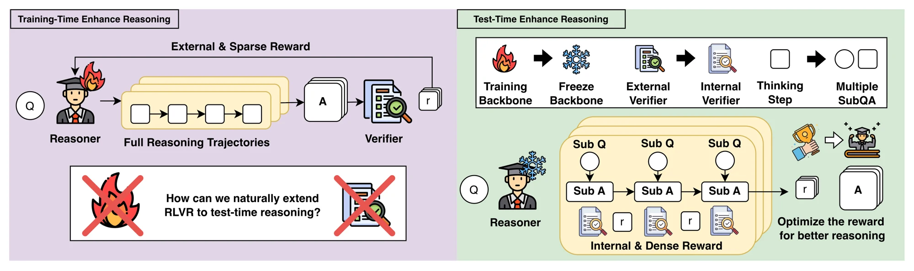
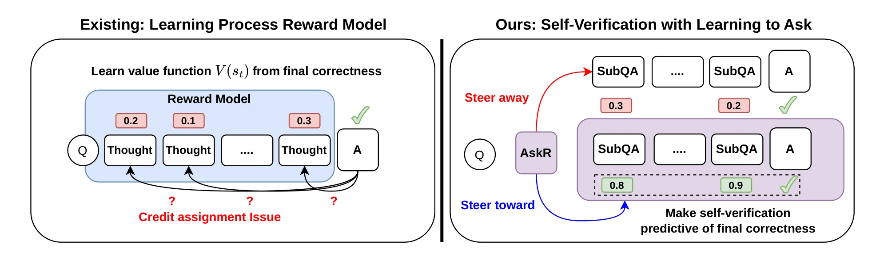
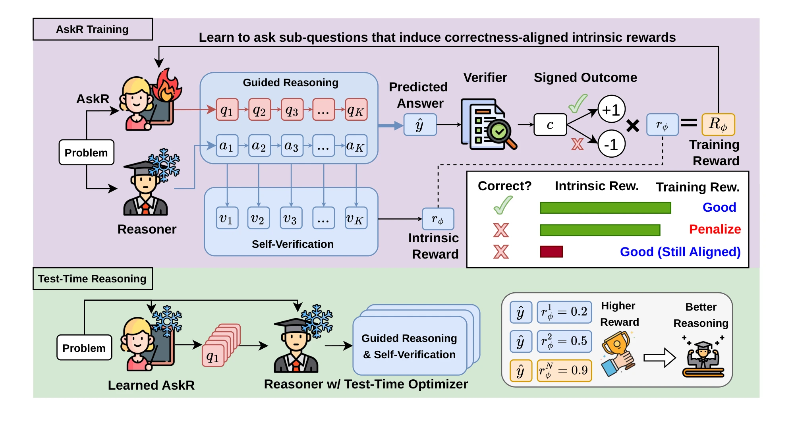
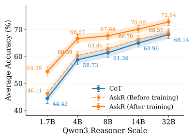
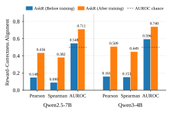
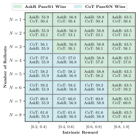
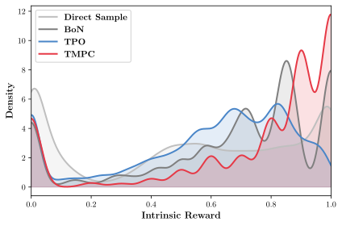

RLVR from Within Learning to Ask to Elicit Intrinsic Rewards for Test-Time Reasoning
1National Yang Ming Chiao Tung University 2NVIDIA 3National Taiwan University †Equal contribution
The answer's in the question. AskR learns to ask the right one.
A process reward model has to learn, from final outcomes alone, how much each intermediate thought is worth. AskR sidesteps that credit-assignment problem. It learns which sub-questions to ask so that a frozen reasoner's own yes/no checks on each answer become predictive of final correctness, and then lets a test-time optimizer use those checks as its reward.
- +7.12points over PRM guidance with the same optimizer, on average across BoN, TPO and TMPC (up to +9.18)
- 5% / 17%of RLVR's training data on text and vision tasks, while beating RLVR on average with TMPC
- 1.7B → 32BQwen3 reasoners improved by a single 4B AskR trained once and reused unchanged
Bring RLVR's signal inside the reasoner
RLVR improves reasoning by rewarding verifiable final answers, but only during training, and only by updating the backbone. At test time there is no verifier. AskR keeps the backbone frozen and turns its self-verification into a dense, internal reward over sub-questions and sub-answers (SubQAs).


Watch AskR ask
AskR writes the sub-questions. The frozen reasoner answers them in one pass and checks its own answers, and a test-time optimizer keeps the trajectory with the highest intrinsic reward.
What is the color of the tissue box?
- (a) gray
- (b) white
- (c) black
- (d) blue
Test-time optimizer: candidate trajectories (illustrative scores)
- #1(b) white0.25
- #2(d) blue0.75
- #3(a) gray0.50
- #4(d) blue1.00
- #5(c) black0.25
Press play, or step through with the arrows, to watch AskR plan the sub-questions and the reasoner answer them.
-
Q1What objects/features are visible in the image? ✓ verifiedA white truck, a tree, some vegetation, a guardrail, a tissue box.
-
Q2Can you identify any objects that resemble a tissue box? ✓ verifiedYes, there is a small, rectangular object on the dashboard of the truck that resembles a tissue box.
-
Q3If a tissue box is present, what is its color based on the visible features? ✓ verifiedThe tissue box appears to be a light purple or lavender color.
-
Q4Considering the options provided, which color best matches the tissue box's appearance? ✓ verifiedThe color that best matches the tissue box's appearance is blue.
Final answer: (d) blue
Intrinsic reward \(r_\phi = (1+1+1+1)/4 = 1.00\)
A small object in a busy street photo. Answering in one shot means guessing at a few pixels.
AskR only asks. It writes four sub-questions that lead from finding the evidence to matching it with the options.
The frozen reasoner answers all four sub-questions, then the original question, in a single generation.
The same reasoner checks every SubQA. The intrinsic reward is the fraction it judges correct: here 4 of 4.
The test-time optimizer samples many trajectories and keeps the one with the highest intrinsic reward. Its answer, (d) blue, is correct.
How AskR works
Two models with separate jobs. The asker \(g_\phi\) only writes sub-questions and is the only thing trained. The reasoner \(\pi_\theta\) answers, verifies and stays frozen throughout.
Training: AskR learns what to ask Test time: the intrinsic reward picks the reasoning
One SubQA trajectory
- q1a1✓
- q2a2✓
- q3a3✗
- q4a4✓
Final answer B
Sampled trajectories
- τ1A0.50
- τ2B0.75
- τ3B1.00
- τ4C0.25
Intrinsic reward
3 of 4 checks pass: r = 0.75
Signed by the final answer
B matches the answer key
Training reward +0.75. A wrong answer would get −0.75.
Test-time optimizer
Ranks trajectories by intrinsic reward and keeps the best, for example with Best-of-N, TPO or TMPC.
Answer B, from τ3
The training reward updates AskR only. The reasoner stays frozen.
Training starts from a problem and its answer key. Only the final answer is ever checked against the key.
AskR reads the problem and writes sub-questions. Asking is its only job.
The frozen reasoner answers every sub-question, then the problem itself, in one pass.
The same reasoner checks each SubQA pair. The fraction it accepts is the intrinsic reward: 3 of 4 here.
The final answer is compared with the key. A right answer keeps the reward positive, and a wrong one flips it negative.
The signed reward updates AskR alone. It learns to ask questions whose checks can be trusted, with no sub-question labels.
At test time there is no answer key. The trained AskR and the same reasoner sample several trajectories.
Each trajectory scores itself: the reasoner checks its SubQA pairs, and the fraction accepted is its intrinsic reward.
A test-time optimizer follows the reward and returns the answer of the best trajectory. No external reward model is needed.

-
Ask
The asker writes up to ten sub-questions. The frozen reasoner answers each one in turn.
\[ Q=(q_1,\dots,q_K)\sim g_\phi(\cdot\mid x) \] -
Verify
The same reasoner judges each SubQA as correct or not. The intrinsic reward is the fraction judged correct.
\[ r_\phi(x,\tau)=(v_1+\dots+v_K)/K \] -
Learn what to ask
GRPO trains the asker on the intrinsic reward, signed by final-answer correctness. No sub-question labels.
\[ R_\phi=(2V(\hat y,y)-1)\,r_\phi(x,\tau) \]
Why sign the reward?
Maximizing self-verification alone would teach the asker to pose easy questions. Signing it by correctness rewards high scores only when they come with a right answer, so a high score becomes evidence of correctness. Try it.
Quantitative results
Same reasoner, same optimizer, same search budget: swapping a trained PRM for AskR's intrinsic reward helps under every optimizer, on text and on vision.
| Method | MMLU-Pro | LAB-Bench | SciEval | Avg. | V* Bench | MMStar | CV-Bench | Avg. |
|---|
One asker, many reasoners
We train one AskR from Qwen3-4B and reuse it, unchanged, to steer Qwen3 reasoners from 1.7B to 32B (average of MMLU-Pro, LAB-Bench and SciEval, with TMPC).
It beats chain-of-thought at every scale: +9.96 points at 1.7B and still +4.70 at 32B, a reasoner eight times its size. The untrained asker gains at most +1.69, so the improvement comes from what AskR learned to ask.

Across model families
Trained from Qwen3-4B or Gemma3-4B, AskR with TMPC beats both chain-of-thought and RLVR on average, on text and on vision.
| Backbone / method | MMLU-Pro | LAB-Bench | SciEval | Avg. | V* Bench | MMStar | CV-Bench | Avg. |
|---|
Training makes the reward predictive
A reward is only useful if it tracks correctness. Before training, the reasoner's self-verification barely predicts whether the final answer is right (AUROC 0.55 and 0.60, against 0.5 for chance). After training, the same frozen reasoner's checks become clearly predictive, on both backbones.
Training on correctness alone does not get there: replacing the signed reward with answer correctness drops the TMPC average from 57.17 to 53.69 on Qwen2.5-7B and from 66.57 to 61.85 on Qwen3-4B.

What the reward buys

